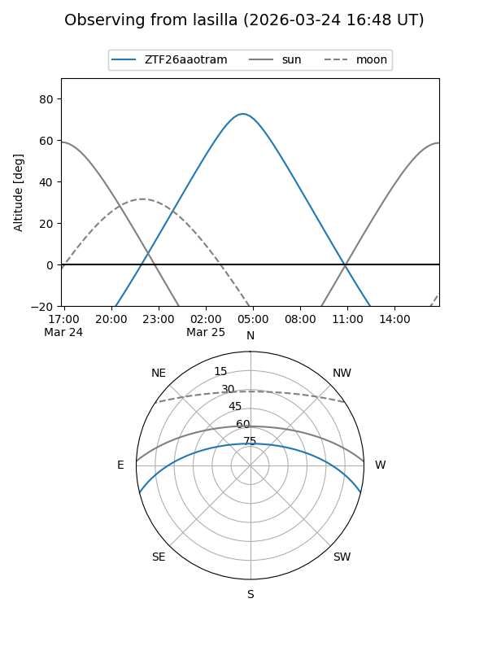
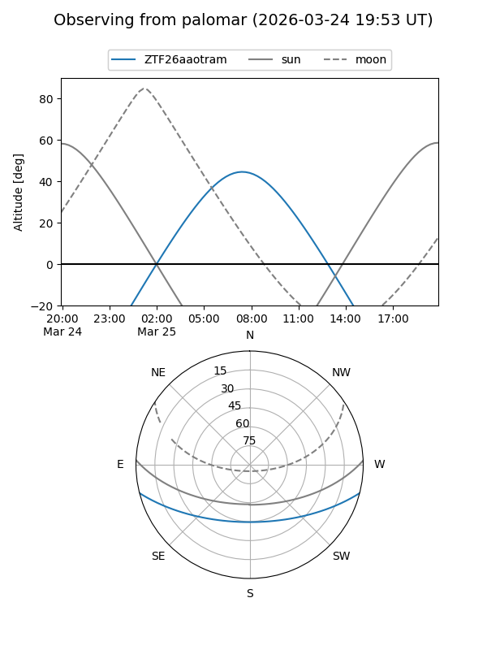

ZTF26aaotram
Target ZTF26aaotram at 2026-03-25 08:57
Aliases and brokers:
FINK: link
Lasair: link
ALeRCE: link
alt names
ZTF26aaotram (ztf,fink_ztf)
Coordinates:
equatorial (ra, dec) = 176.9720,-11.87568
equatorial (HMS+DMS) = 11:47:53.28,-11:52:32.44
galactic (l, b) = (279.3029,+48.05904)
Flags:
Photometry:
last ztfg=15.75, ztfr=15.52
1 ztfg, 1 ztfr detections
Lightcurve
Visibility


Additional plots